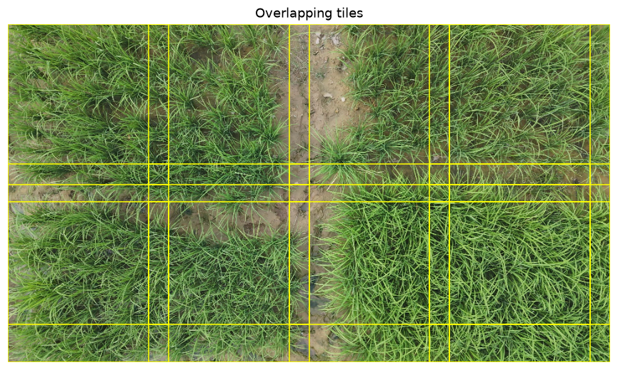
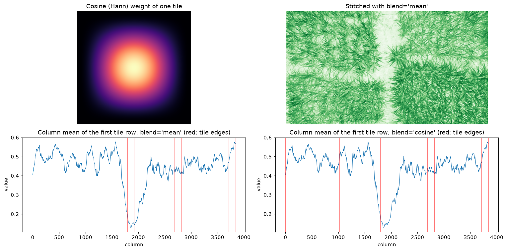
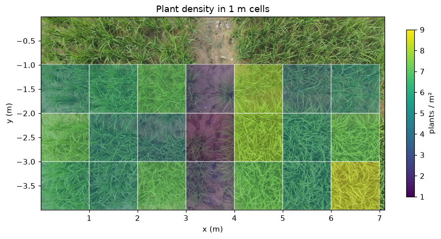

Stand counts tell a breeder or agronomist how well a crop established, and plant size shows how evenly it grows.
Overview
Early in the season, before canopies merge, plants can be counted from millimetre-resolution drone imagery. This notebook counts transplanted rice hills in the LUMS frames two ways: a classical approach (local maxima of Excess Green with rs.uav.count_plants), and the deep-learning approach of the LUMS paper (RiceNet density regression with rs.uav.density_count). Both run tile by tile on large images, so the notebook also covers overlapping tiles, cosine-weighted stitching and merging duplicate detections across tiles.
Core concepts
Learning objectives
Detect plants as peaks or blobs of a vegetation index, with distances set in metres.
See how sensitive counts are to the minimum spacing, and choose it from agronomy.
Tile a large image with overlap, stitch tile outputs with cosine weights, and merge duplicate points (sliding_windows, predict_tiled, merge_points).
Estimate per-plant size and assign size classes (size_classes).
Compute plant density per area unit (plants_per_area).
Run RiceNet density counting when its weights are available.
Data
Data
Type
LUMS rice frames, 22 Aug 2025, 1.85 mm/px (Data/08_remote_sensing/08_04_uav/infrastructure-free-uav-phenotyping/2025-08-22)
Real (CC BY 4.0)
13 Aug orthomosaic and the paper’s manual plant counts
Not in the public release. Counts here are checked by eye and between methods
Contents
Setup
Classical counting: peaks of Excess Green
Large images: tiles, stitching and merging
Plant size
Plants per square metre
Two dates compared
RiceNet density counting
Summary and exercises
Setup
Installation. This notebook needs installation option 5 (core, spatial analysis, spatial statistics, geostatistics and remote sensing): pip install "geolattice[remote-sensing]". See “Installation options” in the GeoLattice README.
Code
import warnings # control warning messageswarnings.filterwarnings("ignore") # hide library warningsfrom pathlib import Path # file pathsimport numpy as np # arraysimport pandas as pd # tablesimport geopandas as gpd # plot polygonsimport matplotlib.pyplot as plt # figuresfrom shapely.geometry import box # rectanglesimport geolattice.rsense as rs # GeoLattice remote sensing (rs.uav = drone tools)plt.rcParams.update({"figure.dpi": 110}) # figure resolutionLUMS = Path("../../../../Data/08_remote_sensing/08_04_uav/infrastructure-free-uav-phenotyping")OUT = Path("outputs"); OUT.mkdir(exist_ok=True)GSD =0.00185# m/px of the 6 m LUMS framesRUN_DL =False# True: download RiceNet weights (Google Drive, via gdown) and run density countingframes =sorted((LUMS /"2025-08-22").glob("*.png"))print(len(frames), "frames from 22 Aug 2025")
10 frames from 22 Aug 2025
Classical counting: peaks of Excess Green
Each rice hill is a cluster of green leaves. Smoothing ExG with a Gaussian of a few centimetres merges the leaves of one hill into a single bump; local maxima at least min_distance_m apart above an Otsu threshold become plants. Because the frame is read with its GSD, both distances are given in metres.
Spacing matters more than anything else. Transplanted rice is commonly set at 15 to 25 cm between hills. The table runs both detectors over four frames for several spacings:
Code
rows = []for f in frames[:4]: im = rs.uav.read_frame(f, gsd=GSD, max_dim=1920) e = rs.uav.vegetation_indices(im, "ExG") row = {"frame": f.name}for md in [0.10, 0.15, 0.20, 0.25]: row[f"peaks {md:.2f} m"] =len(rs.uav.count_plants(e, min_distance_m=md, sigma_m=md /5, gsd=im.attrs["gsd_m"])) row["blobs 0.15 m"] =len(rs.uav.count_plants(e, min_distance_m=0.15, sigma_m=0.03, method="blobs", gsd=im.attrs["gsd_m"])) rows.append(row)sens = pd.DataFrame(rows).set_index("frame")sens
peaks 0.10 m
peaks 0.15 m
peaks 0.20 m
peaks 0.25 m
blobs 0.15 m
frame
frame1123.png
117
48
32
23
247
frame1278.png
152
67
43
30
215
frame130.png
196
82
49
33
326
frame1428.png
322
169
104
69
534
Counts change by a factor of three or more across plausible spacings, and the Laplacian-of-Gaussian blob detector, which responds to every leaf cluster, finds far more. Without reference counts there is no way to know which is right; the only defensible choices are (a) take the spacing from the planting design and check the overlay by eye, or (b) calibrate the parameters on a few plots counted by hand, and report the accuracy \(1 - |\hat n - n| / n\) as LUMS did (94.95 % for RiceNet).
Large images: tiles, stitching and merging
An orthomosaic can be 30 000 × 20 000 pixels; models run on tiles. rs.uav.sliding_windows yields overlapping windows (LUMS: 1024 px tiles, 128 px overlap).
Code
full = rs.uav.read_frame(frames[3], gsd=GSD) # full resolution, 3840 x 2160H, W = full.sizes["y"], full.sizes["x"]wins =list(rs.uav.sliding_windows(H, W, tile=1024, overlap=128))print(len(wins), "tiles of 1024 px with 128 px overlap on a", (H, W), "frame")fig, ax = plt.subplots(figsize=(10, 5.6))ax.imshow(rs.uav.to_rgb_array(full.isel(x=slice(None, None, 4), y=slice(None, None, 4))), extent=[0, W, H, 0])for r0, c0, h, w in wins: ax.add_patch(plt.Rectangle((c0, r0), w, h, fill=False, color="yellow", lw=1))ax.set_title("Overlapping tiles"); ax.axis("off"); plt.show()
15 tiles of 1024 px with 128 px overlap on a (2160, 3840) frame

Stitching. When a tile-wise output depends on the tile (a model’s response near its borders, or any per-tile normalisation), plain averaging leaves visible seams. Cosine (Hann) weights give each tile’s centre full weight and fade towards its borders, so overlaps blend smoothly. The demonstration below uses a deliberately tile-dependent function, ExG rescaled to 0-1 within each tile:
Code
rgb_full = rs.uav.to_rgb_array(full)def tile_exg(t):"""ExG rescaled to 0-1 within the tile: a stand-in for a tile-dependent model output.""" e =2* t[..., 1] - t[..., 0] - t[..., 2]return (e - e.min()) / (np.ptp(e) +1e-9)stitched = {b: rs.uav.predict_tiled(rgb_full, tile_exg, tile=1024, overlap=128, blend=b) for b in ["mean", "cosine"]}w = rs.uav.cosine_weight(1024, 1024)seams =sorted({c0 for _, c0, _, _ in wins} | {c0 + w_ for _, c0, _, w_ in wins}) # tile edges along xfig, axes = plt.subplots(2, 2, figsize=(14, 7), gridspec_kw={"height_ratios": [1.2, 1]})axes[0, 0].imshow(w, cmap="magma"); axes[0, 0].set_title("Cosine (Hann) weight of one tile"); axes[0, 0].axis("off")axes[0, 1].imshow(stitched["mean"][::4, ::4], cmap="Greens"); axes[0, 1].set_title("Stitched with blend='mean'"); axes[0, 1].axis("off")band =slice(0, 1024) # the first row of tilesfor ax, b in [(axes[1, 0], "mean"), (axes[1, 1], "cosine")]: prof = stitched[b][band].mean(axis=0) ax.plot(prof, lw=0.8)for sx in seams: ax.axvline(sx, color="r", lw=0.6, alpha=0.6) ax.set(title=f"Column mean of the first tile row, blend='{b}' (red: tile edges)", xlabel="column", ylabel="value")plt.tight_layout(); plt.show()inner = [sx for sx in seams if0< sx < W]for b in ["mean", "cosine"]: prof = stitched[b][band].mean(axis=0)print(f"blend={b!r}: mean jump across inner tile edges = {np.mean([abs(prof[sx] - prof[sx -1]) for sx in inner]):.4f}")

blend='mean': mean jump across inner tile edges = 0.0092
blend='cosine': mean jump across inner tile edges = 0.0018
With blend="mean" the profile steps wherever a tile starts or ends (red lines), because each tile was rescaled differently. Cosine weights fade each tile out towards its edges, so the transition is spread over the overlap and the steps are smoothed out. (RiceNet’s density maps are stitched this way.)
A note on the weight itself: the LUMS script builds it from a cosine over half a period, which makes a ramp that peaks in the tile’s bottom-right corner, not a centred window. GeoLattice uses the full period, as shown in the top-left panel.
Merging points. Plants in an overlap are detected by two tiles. rs.uav.merge_points replaces points closer than a radius with their mean.
Code
def tile_peaks(core_only):"""ExG peaks per tile, in frame pixels; optionally keep only each tile's core.""" out = []for r0, c0, h, w_ in wins: t = full.isel(y=slice(r0, r0 + h), x=slice(c0, c0 + w_)) p = rs.uav.count_plants(rs.uav.vegetation_indices(t, "ExG"), min_distance_m=0.15, sigma_m=0.03, gsd=GSD) rr, cc = p.row.to_numpy() + r0, p.col.to_numpy() + c0if core_only: # the half of each overlap nearest a tile belongs to that tile half =128//2 keep = ((rr >= (r0 + half if r0 >0else0)) & (rr < (r0 + h - half if r0 + h < H else H)) & (cc >= (c0 + half if c0 >0else0)) & (cc < (c0 + w_ - half if c0 + w_ < W else W))) rr, cc = rr[keep], cc[keep] out.append(pd.DataFrame({"row": rr, "col": cc}))return pd.concat(out, ignore_index=True)all_pts = tile_peaks(core_only=False)merged = rs.uav.merge_points(all_pts, radius=0.15/ GSD /2, x="col", y="row") # half the spacing, in pixelscore = tile_peaks(core_only=True)core_merged = rs.uav.merge_points(core, radius=0.15/ GSD /2, x="col", y="row")whole = rs.uav.count_plants(rs.uav.vegetation_indices(full, "ExG"), min_distance_m=0.15, sigma_m=0.03, gsd=GSD)pd.Series({"whole frame at once": len(whole),"all tile points": len(all_pts), "all tile points, merged": len(merged),"tile cores only": len(core), "tile cores, merged": len(core_merged)}).to_frame("count")
count
whole frame at once
171
all tile points
384
all tile points, merged
216
tile cores only
270
tile cores, merged
172
Merging alone is not enough: a peak detector also fires on leaves cut by a tile edge, and those half-plants sit too far from the true centre to be merged. Keeping only each tile’s core (dropping detections within half the overlap of an inner edge) removes them, and merging then has little left to do. RiceNet’s density_count uses the same idea (its border argument). Small differences from the whole-frame count remain because Otsu picks a threshold per tile.
Plant size
RiceNet’s second network regresses a size for each plant. A classical stand-in: grow each detected plant into the vegetation mask with a watershed seeded at the peaks, and take each region’s area. rs.uav.size_classes then labels plants small, medium or large by quartiles, as the LUMS maps do.
rs.uav.plants_per_area(points, polygons) counts points per polygon and divides by area. The frame has no CRS, so a grid of 1 m × 1 m cells is laid out in the frame’s own metre coordinates (with a real orthomosaic, use plot polygons in its CRS; geographic CRSs are projected to UTM automatically).
Code
xmin, xmax =float(img.x.min()), float(img.x.max())ymin, ymax =float(img.y.min()), float(img.y.max())cells = [box(x, y, x +1, y +1) for x in np.arange(xmin, xmax -1, 1.0) for y in np.arange(ymin, ymax -1, 1.0)]grid = gpd.GeoDataFrame({"cell": range(len(cells))}, geometry=cells)dens = rs.uav.plants_per_area(pts, grid)print(dens[["count", "area", "density"]].describe().round(2))fig, ax = plt.subplots(figsize=(10, 5.6))ax.imshow(rs.uav.to_rgb_array(img), extent=[xmin, xmax, ymin, ymax])dens.plot(column="density", ax=ax, alpha=0.45, cmap="viridis", edgecolor="w", legend=True, legend_kwds={"label": "plants / m²", "shrink": 0.7})ax.set(title="Plant density in 1 m cells", xlabel="x (m)", ylabel="y (m)"); plt.show()
count area density
count 21.00 21.0 21.00
mean 5.48 1.0 5.48
std 2.09 0.0 2.09
min 1.00 1.0 1.00
25% 5.00 1.0 5.00
50% 5.00 1.0 5.00
75% 7.00 1.0 7.00
max 9.00 1.0 9.00

Cells over the alley between plots have the fewest plants. Note the level, though: about 5 to 9 detected plants per m², while a 20-25 cm transplanting grid would give 16 to 25 hills per m². Either the peak detector merges neighbouring hills at this spacing, or the 1.85 mm GSD (reported for the orthomosaic, not for these video frames) is wrong for the frames, which would change every metric distance and area. A short hand count, as in Exercise 1, settles which.
Two dates compared
The same detector on all frames of 22 and 28 August (each date’s frames come from different locations, so compare distributions, not frames):
Code
rows = []for date in ["2025-08-22", "2025-08-28"]:for f insorted((LUMS / date).glob("*.png")): im = rs.uav.read_frame(f, gsd=GSD, max_dim=1920) e = rs.uav.vegetation_indices(im, "ExG") p = rs.uav.count_plants(e, min_distance_m=0.15, sigma_m=0.03, gsd=im.attrs["gsd_m"]) area = im.sizes["x"] * im.sizes["y"] * im.attrs["gsd_m"] **2 rows.append({"date": date, "frame": f.name, "plants": len(p), "plants_per_m2": len(p) / area,"cover": rs.uav.canopy_cover(e)[1]})counts = pd.DataFrame(rows) # fewer peaks on 28 Aug: neighbouring hills start to mergedisplay(counts.groupby("date")[["plants", "plants_per_m2", "cover"]].describe().round(2).T)counts.to_csv(OUT /"plant_counts_classical.csv", index=False)
date
2025-08-22
2025-08-28
plants
count
10.00
10.00
mean
103.90
71.80
std
42.58
15.66
min
48.00
44.00
25%
69.50
63.00
50%
94.00
68.00
75%
141.00
82.25
max
169.00
96.00
plants_per_m2
count
10.00
10.00
mean
3.66
2.53
std
1.50
0.55
min
1.69
1.55
25%
2.45
2.22
50%
3.31
2.40
75%
4.97
2.90
max
5.95
3.38
cover
count
10.00
10.00
mean
0.43
0.35
std
0.12
0.07
min
0.24
0.22
25%
0.34
0.31
50%
0.39
0.37
75%
0.54
0.39
max
0.60
0.45
RiceNet density counting
RiceNet (Chaudhry et al. 2026, code in code/plant_counting_&_size_estimation/) predicts a density map whose integral is the plant count; peaks of the map are plant centres. The GeoLattice port, rs.uav.density_count, runs it on 1024 px tiles with 128 px overlap, stitches the density with cosine weights, finds peaks (peaks_from_density) and merges duplicates with merge_points. An optional second network gives plant size.
The weights are on Google Drive. rs.uav.list_weights() shows the registry and whether each file is cached; rs.uav.fetch_weights("ricenet_count") downloads it with gdown.
Code
rs.uav.list_weights()
name
task
source
kind
cached
0
sam_vit_b
Segment Anything ViT-B (plant masks)
Kirillov et al. 2023, Apache-2.0
file
False
1
sam_vit_l
Segment Anything ViT-L
Kirillov et al. 2023, Apache-2.0
file
False
2
sam_vit_h
Segment Anything ViT-H
Kirillov et al. 2023, Apache-2.0
file
False
3
ricenet_count
RiceNet rice plant counting (density map)
Chaudhry, Rana & Jaleel 2026 (LUMS), MIT
gdrive_folder
False
4
ricenet_size
RiceNet plant size regression
Chaudhry, Rana & Jaleel 2026 (LUMS), MIT
gdrive_folder
False
5
yolov5_rice_panicle
YOLOv5 rice panicle detection (use backend='yo...
Chaudhry, Rana & Jaleel 2026 (LUMS), MIT
gdrive_folder
False
Code
if RUN_DL: model = rs.uav.load_ricenet(rs.uav.fetch_weights("ricenet_count"), kind="count") size_model = rs.uav.load_ricenet(rs.uav.fetch_weights("ricenet_size"), kind="size") pts_dl, density = rs.uav.density_count(full, model, size_model=size_model, tile=1024, overlap=128, progress=True) pts_dl["size_class"] = rs.uav.size_classes(pts_dl)print(len(pts_dl), "plants (RiceNet) vs", len(whole), "(ExG peaks)") fig, axes = plt.subplots(1, 2, figsize=(15, 4.6)) axes[0].imshow(density, cmap="inferno"); axes[0].set_title(f"RiceNet density, integral = {float(density.sum()):.0f}") axes[1].imshow(rgb_full); axes[1].plot(pts_dl.col, pts_dl.row, "c+", ms=6)for a in axes: a.axis("off") plt.show()else:print("RUN_DL is False: RiceNet skipped. Set RUN_DL = True to download weights and compare with ExG peaks.")
RUN_DL is False: RiceNet skipped. Set RUN_DL = True to download weights and compare with ExG peaks.
Summary and exercises
Key points
Before canopies merge, plants are peaks of Excess Green. Set the minimum spacing from how the crop was planted, then check a hand count.
Large frames are counted in overlapping tiles. Cosine weights hide the seams, and merge_points drops detections that were counted twice.
Plant size and plants per square metre turn the points into stand traits.
RiceNet density counts take over when peaks blur together. The windowing around that model is the same tiling machinery.
Count plants by hand in a 1 m × 1 m window of one frame, then pick the min_distance_m that best reproduces your count. Does it transfer to the other frames?
Replace ExG with VARI (clipped to -1..1) in count_plants. Which index gives cleaner peaks in flooded areas?
Run predict_tiled with overlap=0 and overlap=256. How do seams and run time change?
With RUN_DL = True, compute the agreement \(1 - |n_{ExG} - n_{RiceNet}| / n_{RiceNet}\) per frame.
References
Chaudhry, H., Rana, S. and Jaleel, A. (2026). UAV-based crop reconstruction and trait estimation using RGB imagery without external geospatial infrastructure. Computers and Electronics in Agriculture (accepted).
Lempitsky, V. and Zisserman, A. (2010). Learning to count objects in images. NeurIPS.
Lindeberg, T. (1998). Feature detection with automatic scale selection. International Journal of Computer Vision, 30, 79-116 (Laplacian-of-Gaussian blobs).
Beucher, S. and Meyer, F. (1993). The morphological approach to segmentation: the watershed transformation.